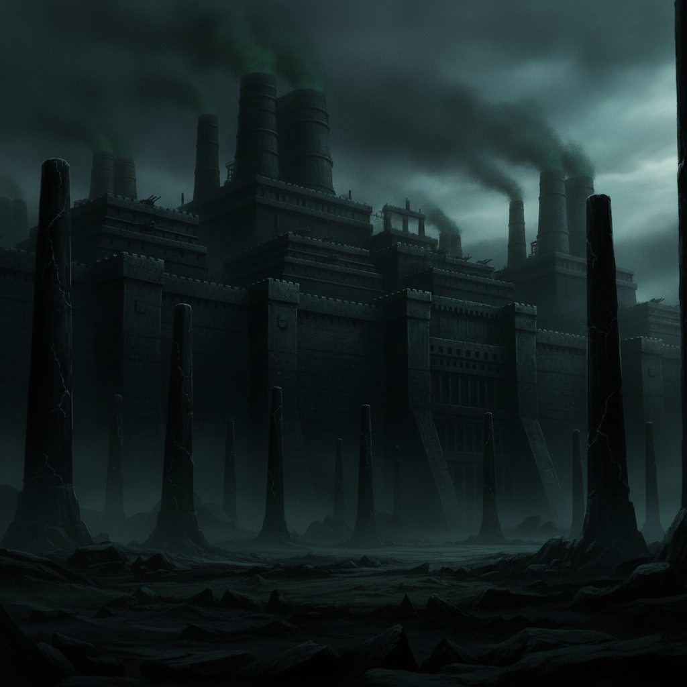
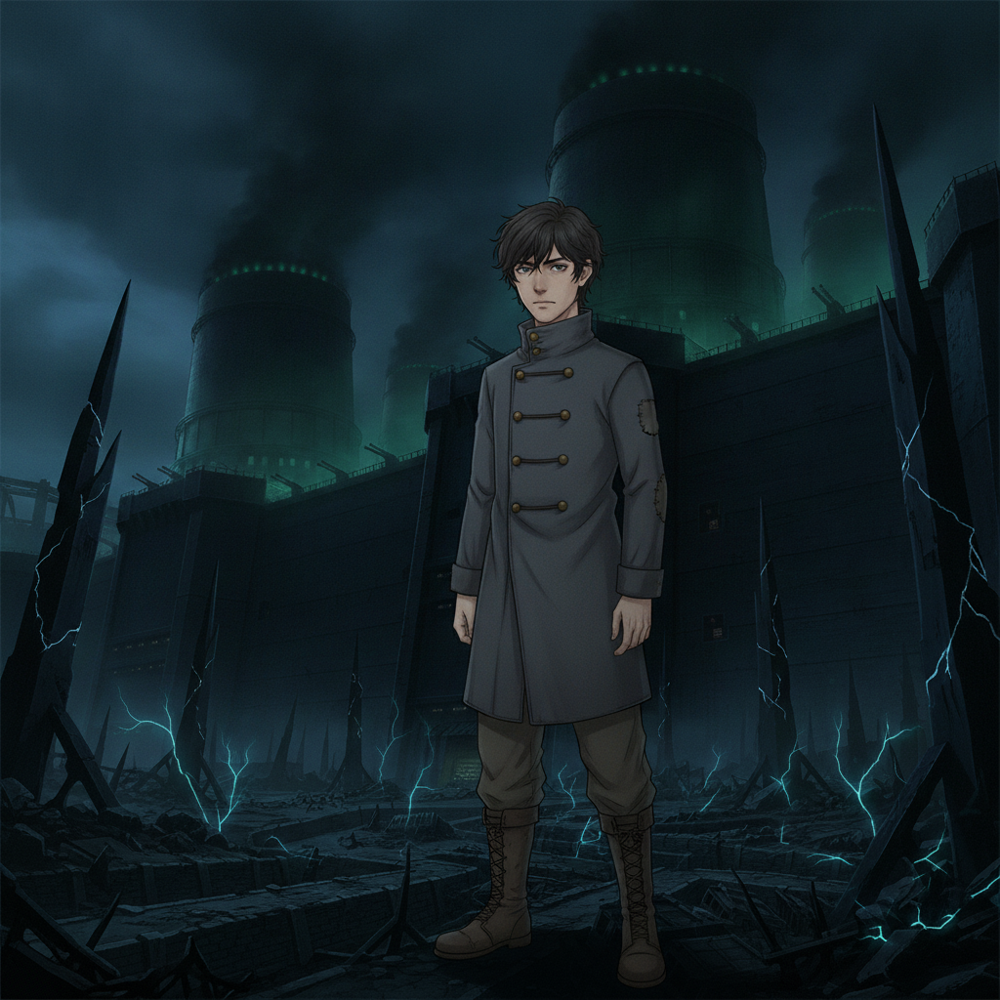
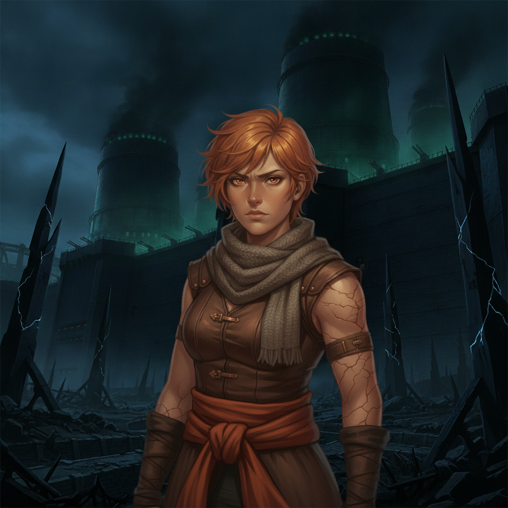

The fortified outer works of the Enemy Organization loom, black-iron curtain walls bleeding a sickly green glow into the industrial dusk. Nullifier pylons clamp down on any errant weave.
Ember is at the forefront, a furious, burning core of raw power. She unleashes devastating weaves, tearing through defenses.
With every victory, the Rust climbs further up her arm, a dark, creeping stain against her skin. The cost of every life she saves is written on her body.

Caedon Vale“Ember, conserve your strength! We need you at the core.”

Ember Kellan“There's no conserving left, Caedon. Only spending. Only winning. This is what I was made for.”